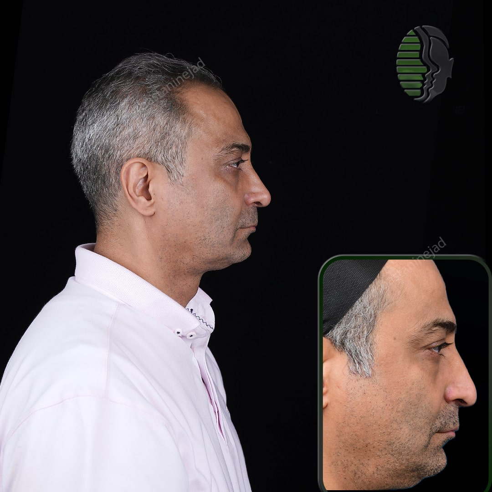

جراحی زیبایی بینی سختترین عمل جراحی صورت است و نیاز به درک کاملی از هنر و علم دارد. آگاهی از عوارض احتمالی برای تصمیمگیری آگاهانه ضروری است.
دستهبندی عوارض جراحی بینی
- عوارض حین عمل
- عوارض بلافاصله پس از عمل
- عوارض زودرس پس از عمل
- عوارض دیررس پس از عمل
عوارض حین عمل
خونریزی بیش از حد
ممکن است مربوط به اختلال انعقادی ژنتیکی یا اکتسابی باشد. آسپرین باید حداقل ۱ هفته قبل از جراحی قطع شود.
سوراخ شدن پوست
بهتر است با توجه دقیق به تکنیک از آن جلوگیری شود.
عوارض اولیه پس از عمل
خونریزی
شیوع گزارش شده از ۲ تا ۴ درصد متغیر است.
عفونت
میزان عفونت زخم پس از جراحی زیبایی بینی کمتر از ۲ درصد ذکر شده است.
عوارض دیررس پس از عمل
هیپرتروفی اسکار
ممکن است از نتیجه خوب پس از رینوپلاستی خارجی بکاهد. درمان اولیه با استروئیدهای داخل ضایعهای.
سوراخ شدن سپتوم
شیوع این عارضه ۳ تا ۲۴.۵ درصد توصیف شده است.
آمار عوارض جراحی بینی
طبق تحقیقات دکتر شاهین باستانینژاد، میزان عوارض عمده در جراحی بینی تنها ۰.۷ درصد است. این رقم با انتخاب جراح باتجربه و رعایت دقیق دستورالعملهای پیش و پس از عمل، قابل کاهش بیشتر است.
راههای پیشگیری از عوارض
- انتخاب جراح مجرب و دارای بورد تخصصی
- رعایت دقیق دستورالعملهای قبل از عمل
- قطع مصرف داروهای رقیقکننده خون حداقل یک هفته قبل
- خودداری از مصرف دخانیات
- رعایت دقیق مراقبتهای پس از عمل
- گزارش هر نشانهای از عفونت به جراح